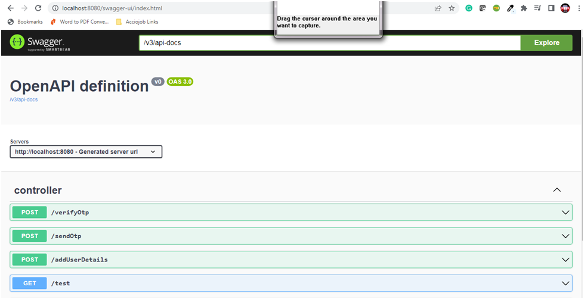

Through Swagger-UI we will be able to access all the API's through the HTML page itself.
The HTML page of the application can be accessed through the link:
http://localhost:8080/swagger-ui/index.html
The Swagger-UI HTML page of the application will be as below:
